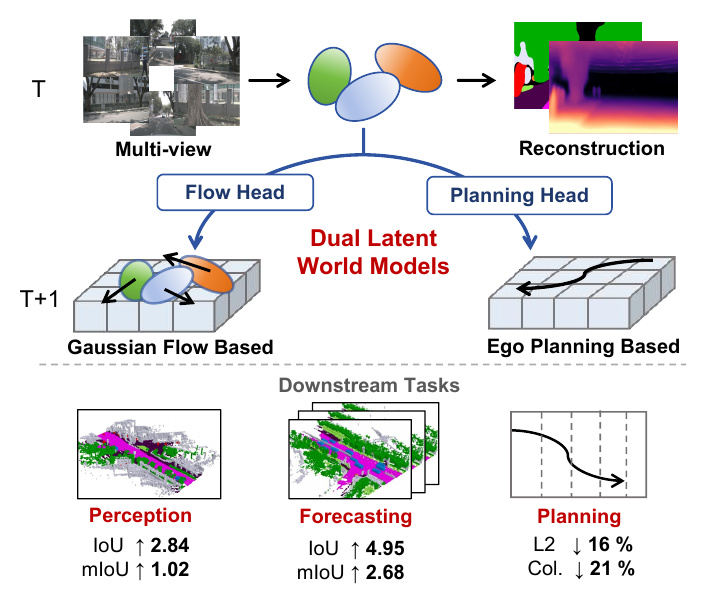
DLWMDLWM: Dual Latent World Models enable Holistic Gaussian-centric Pre-training in Autonomous Driving
CVPR, 2026
Connecting Gaussian scene representations with future prediction for perception, occupancy forecasting, and planning.
Ph.D. Candidate · HKUST
I am a Ph.D. candidate in Electronic and Computer Engineering at the Hong Kong University of Science and Technology, advised by Prof. Shaojie Shen and Prof. Michael Yu Wang.
My research focuses on self-supervised 3D/4D representation learning and predictive world models, using autonomous driving as a large-scale testbed. I aim to extend these representations to action-conditioned 3D/4D world models for robot manipulation.
* Equal contribution. Click a figure to enlarge it; Framework links open method or survey overviews.

DLWMCVPR, 2026
Connecting Gaussian scene representations with future prediction for perception, occupancy forecasting, and planning.
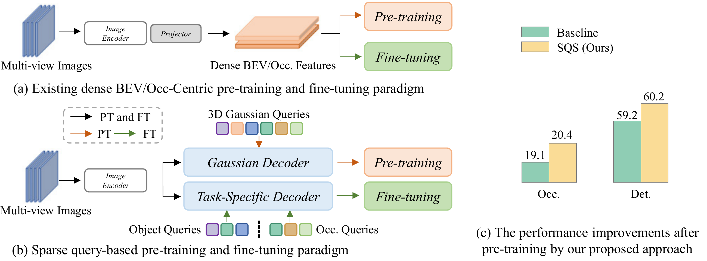
SQSNeurIPS, 2025 Spotlight
Pre-training sparse queries through Gaussian splatting for 3D detection and occupancy prediction.
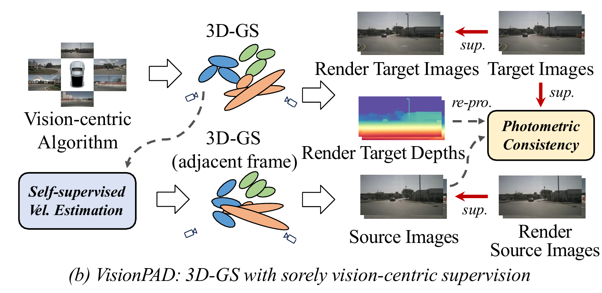
VisionPADCVPR, 2025
Pre-training dense 3D representations through Gaussian splatting, using only images as supervision.
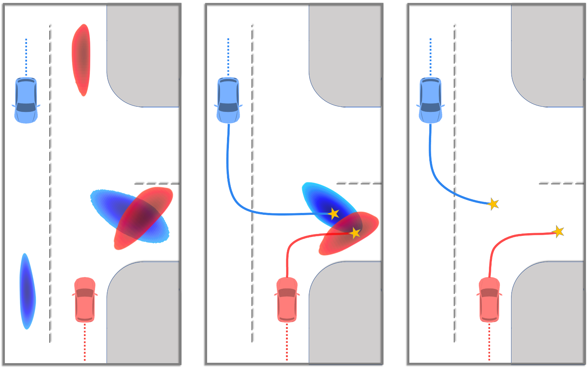
BiFFICCV, 2023
Predicting consistent futures for interacting agents through intention fusion and trajectory refinement.
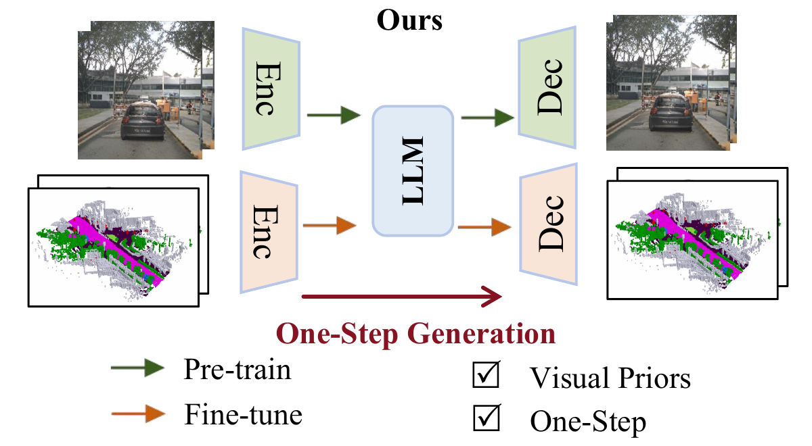
LLM-WORLD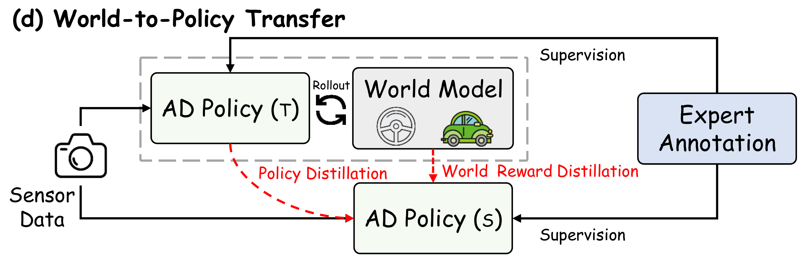
WPT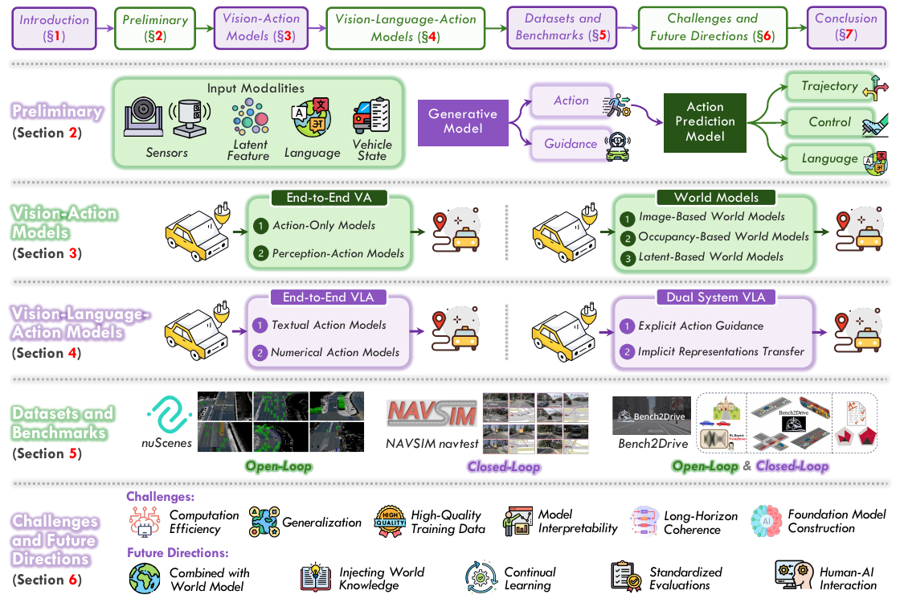
VLA FOR AUTONOMOUS DRIVINGPreprint · Under review at TPAMI (major revision)
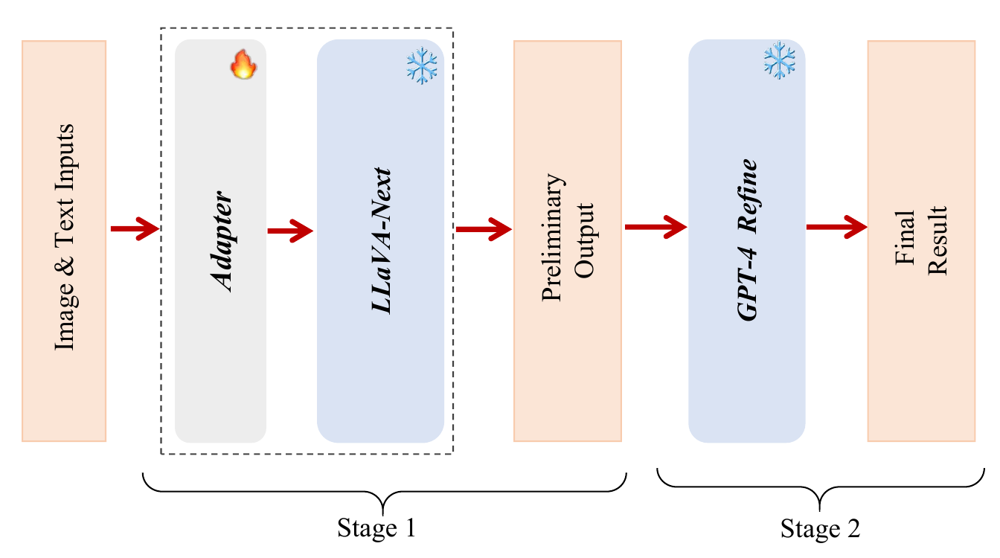
TWO-STAGE LVLM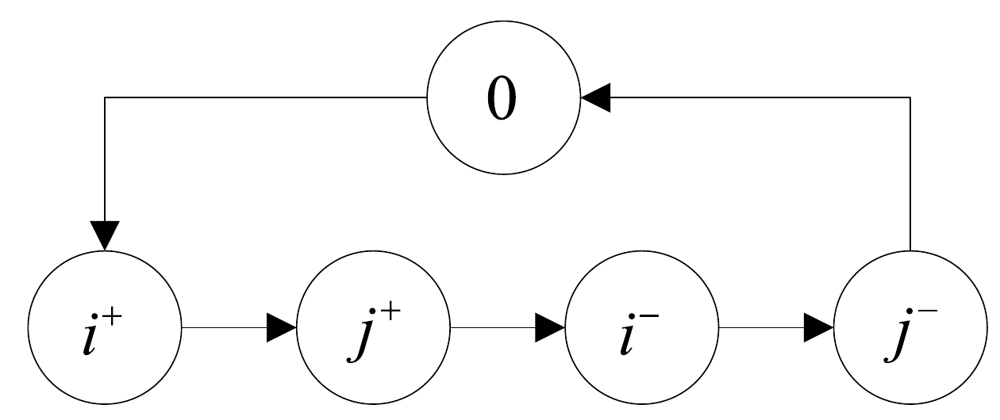
K2MSFor the complete list, see my CV or Google Scholar.
Pre-Ph.D. projects at CUHK, Shenzhen (2018–2020).
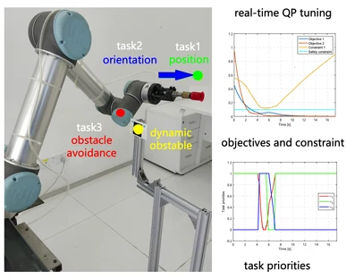
Developed QP-based soft task-priority tuning for UR5 manipulation in dynamic environments.
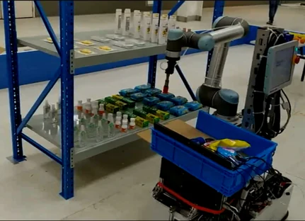
Contributed to a team-built mobile manipulation system with RGB-D perception, navigation, and suction picking.
Reviewer: CVPR, ECCV, NeurIPS, ICLR, and CoRL.
Teaching assistant at HKUST: The Rise of Autonomous Robots; Deep Learning in Computer Vision.
Best Teaching Assistant Award, ECE, HKUST (2020–21).